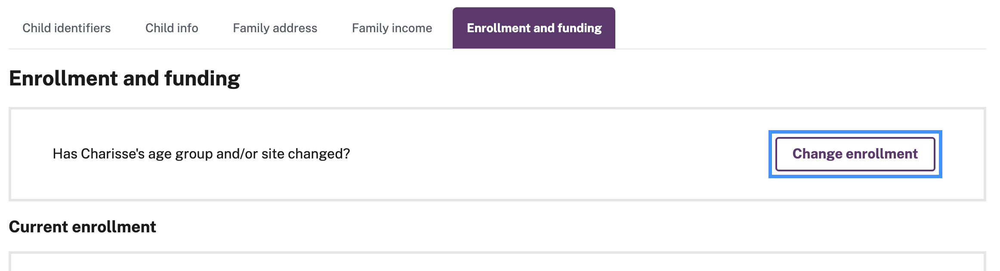
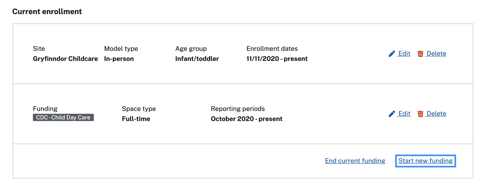
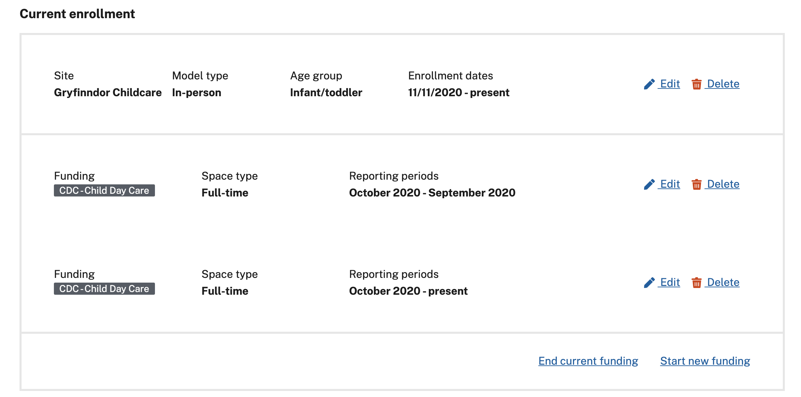
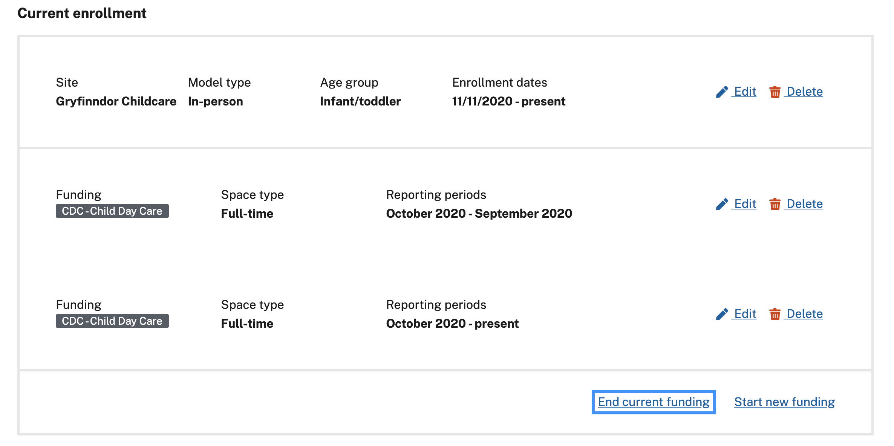
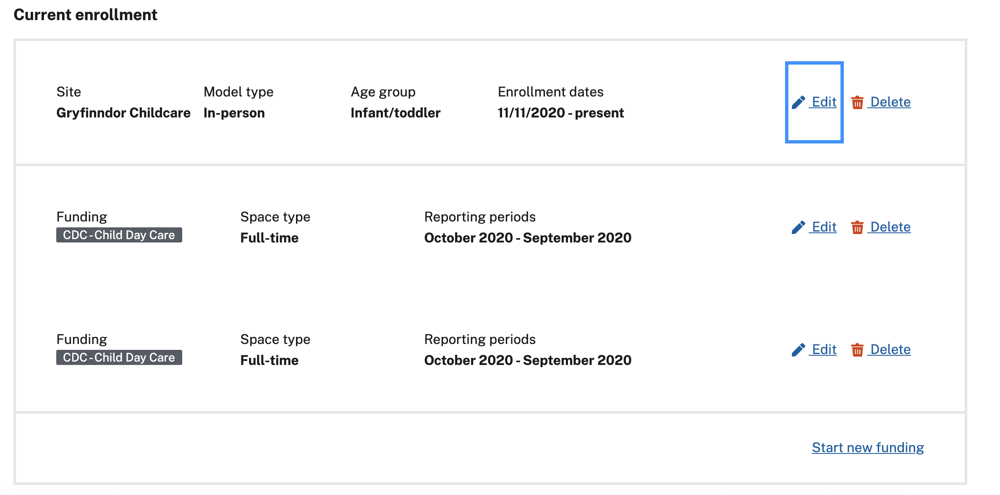

Edit a child’s enrollment and funding information
Table of contents
Find the record to be edited
- Navigate to your ECE Reporter roster
- When you find the record you’d like to edit, click on the child’s name to open their enrollment record.
- Click on the Enrollment and funding tab below the child’s name near the top of the page.

Make enrollment changes
Change a child’s age group and or site
Find and click the change enrollment in the top right of the enrollment and funding section.

For the new enrollment, add:
- Enrollment site
- Enrollment start date
- Care model
- Age group
- Funding source
- Contract space
- First reporting period (for the new enrollment’s funding)
- Last reporting period (for the previous enrollment’s funding)
Click the change enrollment button.
The new enrollment will be displayed in the current enrollment section.
The previous enrollment will be saved in the past enrollment section at the bottom of the page.
Start new or change funding
If you’ve started or changed the funding source for a child’s enrollment, click the start new funding button at the bottom right of the current enrollment information. 
For the new changed funding, add:
- Funding type
- Contract space
- First reporting period
- Last reporting period for the previous funding
Both fundings can be found in the current enrollment section. 
End funding
Use this when a child is no longer receiving OEC funding for their enrollment. Find and click the end current funding button in the bottom right of the enrollment and funding information card.

Add the last reporting period for the current funding and click the end current funding button.
The funding will now have an end date in the enrollment information card.
Edit or delete enrollment or funding information
Use this if you want to alter incorrect data in an enrollment or funding.
Find and click the edit or delete button on the right side of an enrollment or funding. 
Note: deleting an enrollment will delete all the funding information it contains.
The site and age group fields cannot be edited without creating a new enrollment. Make your changes then hit the save button to update the record.